LAPORAN TUGAS SEBELUM UAS
INFRASTRUKTUR DAN PLATFORM SAINS DATA
|
Nama NIM Kelas |
: : : |
Iqbal Firmansyah L200220180 C |
1. Menyiapkan Data Sebelum Analisis
Menyiapkan data extract whatsapp
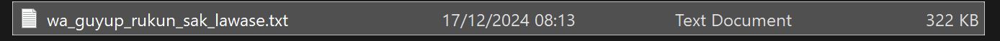
Mengubah data menjadi csv dan membenahi format data di dalamnya agar sesuai dengan fiturnya menggunakan kode python convert_whatsapp.py
import csv
import re
# Nama file input dan output
input_file = "wa_guyup_rukun_sak_lawase.txt"
output_file = "wa_guyup_rukun_sak_lawase.csv"
# Pola regex untuk pesan WhatsApp
pattern = r"(\d{1,2}/\d{1,2}/\d{2,4}), (\d{2}:\d{2}) - (.+?): (.+)"
system_pattern = r"(\d{1,2}/\d{1,2}/\d{2,4}), (\d{2}:\d{2}) - (.+)"
# Membaca file teks
with open(input_file, "r", encoding="utf-8") as file:
lines = file.readlines()
# Menulis ke file CSV
with open(output_file, "w", encoding="utf-8", newline="") as csv_file:
writer = csv.writer(csv_file)
writer.writerow(["Date", "Time", "Sender/Info", "Message"]) # Header CSV
for line in lines:
line = line.strip() # Menghapus spasi putih di awal/akhir
if match := re.match(pattern, line): # Jika cocok dengan pesan biasa
date, time, sender, message = match.groups()
writer.writerow([date, time, sender, message])
elif match := re.match(system_pattern, line): # Jika cocok dengan pesan sistem
date, time, info = match.groups()
writer.writerow([date, time, info, ""])
else: # Jika baris tidak cocok, kemungkinan kelanjutan pesan sebelumnya
if line: # Hanya jika baris tidak kosong
writer.writerow(["", "", "", line])
print(f"File telah dikonversi ke {output_file}")
Menjalankan pada terminal:
Dihasilkan data csv:
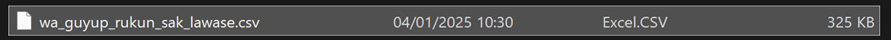
Apabila dilihat datanya menggunakan program view_data.ipynb, hasilnya sebagai berikut.
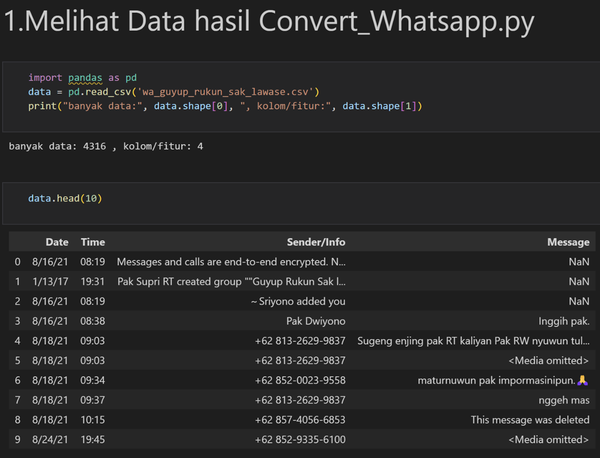
Selanjutnya, kita hanya mengambil data dari kolom/fitur "Message" dengan menggunakan kode python get_message_only.py
import pandas as pd
# Nama file input dan output
input_file = "wa_guyup_rukun_sak_lawase.csv"
output_file = "wa_guyup_rukun_sak_lawase_msg.csv"
# Mengambil fitur Message saja
data = pd.read_csv(input_file)
data = data['Message']
# Menyimpan CSV
data.to_csv(output_file , index=False)
print(f"File telah disaring dan disimpan di {output_file}")
Menjalankan di terminal:
Dihasilkan data csv:

Apabila dilihat menggunakan view_data.ipynb, hasilnya sebagai berikut.
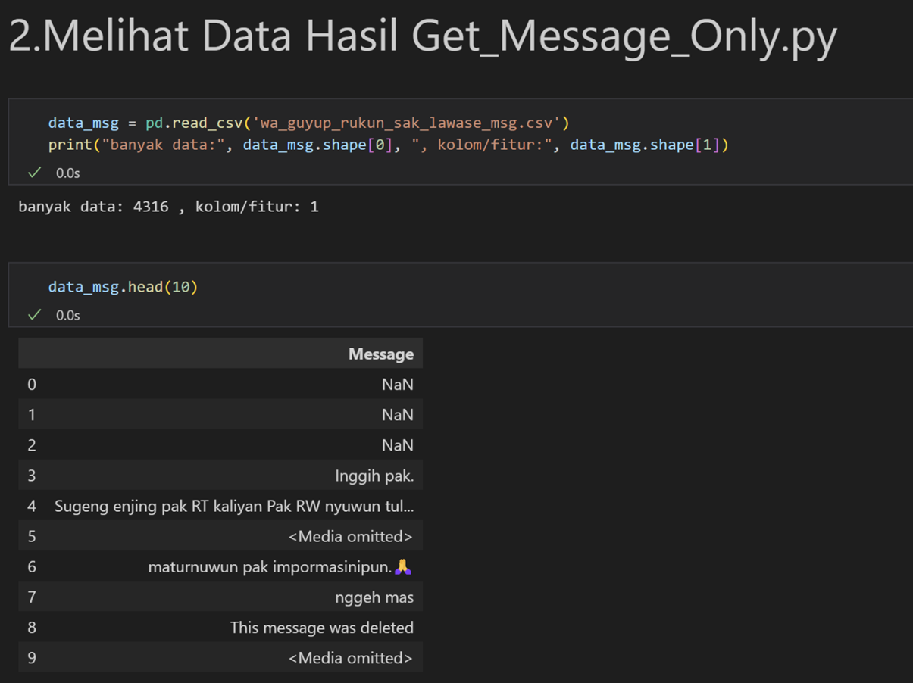
Selanjutnya, data akan dilakukan pembersihan data untuk mengambil angka, huruf dan tanda baca-tulis umum saja menggunakan kode python clean_whatsapp_csv.py
import csv
import re
import math
# Nama file input dan output
input_file = "wa_guyup_rukun_sak_lawase_msg.csv"
output_file = "wa_guyup_rukun_sak_lawase_clean.csv"
# Pola regex untuk huruf, angka, dan tanda baca-tulis umum
clean_pattern = r"[^\w\s.,!?;:'\"()\-\/@]"
def clean_text(text):
"""
Membersihkan teks dari karakter yang tidak diinginkan.
"""
return re.sub(clean_pattern, "", text)
def is_valid_row(row):
"""
Mengecek apakah baris valid (tidak ada NaN dan tidak mengandung 'media omitted').
"""
for cell in row:
if cell is None or cell == "" or (isinstance(cell, float) and math.isnan(cell)):
return False
if "media omitted" in cell.lower():
return False
return True
# Membaca file CSV asli dan membersihkan datanya
with open(input_file, "r", encoding="utf-8") as infile, open(output_file, "w", encoding="utf-8", newline="") as outfile:
reader = csv.reader(infile)
writer = csv.writer(outfile)
# Menyalin header
headers = next(reader)
writer.writerow(headers)
# Membersihkan setiap baris data
for row in reader:
if is_valid_row(row): # Hanya memproses baris valid
cleaned_row = [clean_text(cell) for cell in row]
writer.writerow(cleaned_row)
print(f"File telah dibersihkan dan disimpan di {output_file}")
Menjalankan clean_whatsapp_csv.py pada terminal:
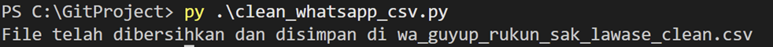
Dihasilkan file csv:
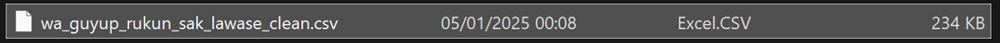
Bila dilihat datanya dengan program view_data.ipynb, hasilnya seperti berikut.
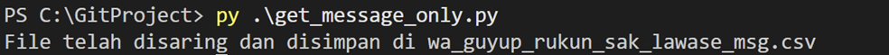
Karena data sudah siap, maka selanjutnya data di-archive ke dalam file TAR dengan nama yang sama dengan file csv yaitu wa_guyup_rukun_sak_lawase_clean.tar
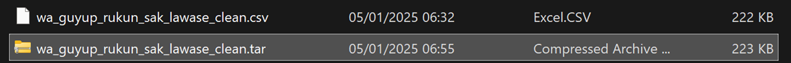
2. Menyiapkan scale_data.py dan many_kmeans_flow.py yang Sudah Dimodifikasi
Modifikasi scale_data.py:
import tarfile
from itertools import islice
def load_yelp_reviews(num_docs):
f = 'wa_guyup_rukun_sak_lawase_clean.tar'
with tarfile.open(f) as tar:
print('Read tar file ... ')
datafile = tar.extractfile('wa_guyup_rukun_sak_lawase_clean.csv')
return list(islice(datafile, num_docs))
def make_matrix(docs, binary=False):
from sklearn.feature_extraction.text import CountVectorizer
vec = CountVectorizer(min_df=10, max_df=0.1, binary=binary)
mtx = vec.fit_transform(docs)
cols = [None] * len(vec.vocabulary_)
for word, idx in vec.vocabulary_.items():
cols[idx] = word
return mtx, cols
Modifikasi many_kmeans_flow.py:
from metaflow import FlowSpec, step, Parameter, resources, conda_base, profile
# @conda_base(python='3.8.3', libraries={'scikit-learn': '0.24.1'}) # Tidak Dipakai
class ManyKmeansFlow(FlowSpec):
num_docs = Parameter('num-docs', help='Number of documents', default=1000000)
@resources(memory=4000)
@step
def start(self):
import scale_data
docs = scale_data.load_yelp_reviews(self.num_docs)
self.mtx, self.cols = scale_data.make_matrix(docs)
self.k_params = list(range(3, 6, 1)) # list(range(3,6,1)) -> untuk membuat data menjadi 3, 4 dan 5 clusters
self.next(self.train_kmeans, foreach='k_params')
# @resources(cpu=4, memory=4000) # Tidak Dipakai
@step
def train_kmeans(self):
from sklearn.cluster import KMeans
self.k = self.input
with profile('k-means'):
kmeans = KMeans(n_clusters=self.k, verbose=1, n_init=1)
kmeans.fit(self.mtx)
self.clusters = kmeans.labels_
self.next(self.analyze)
@step
def analyze(self):
from analyze_kmeans import top_words
self.top = top_words(self.k, self.clusters, self.mtx, self.cols)
self.next(self.join)
@step
def join(self, inputs):
self.top = {inp.k: inp.top for inp in inputs}
self.next(self.end)
@step
def end(self):
pass
if __name__ == '__main__':
ManyKmeansFlow()
Untuk file python analyze_kmeans.py tidak ada perubahan.
3. Menjalankan Analisis di Terminal
Memulai analisis dengan menjalankan program dengan perintah sebagai berikut:
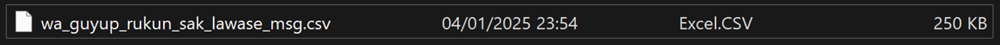
Proses:
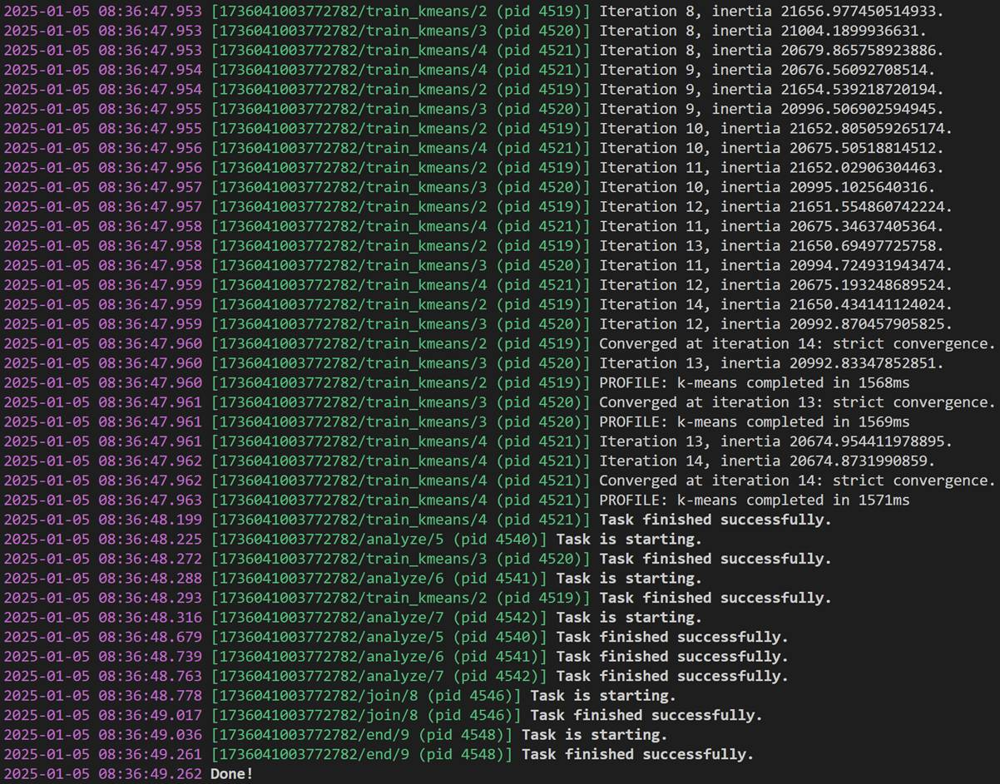
4. Memeriksa Hasil
Menjalankan python di terminal.
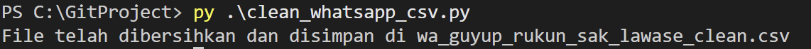
Mengambil hasil analisis sebelumnya.
Python 3.10.15 (main, Oct" 3 2024, 07:27:34) [GCC 11.2.0] on linux
Type "help", "copyright", "credits" or "license" for more information.
>>> from metaflow import Flow
>>> run = Flow('ManyKmeansFlow').latest_run
>>>
Membuat variabel untuk mengambil hasil kmeans dengan 3, 4 dan 5 kluster
>>> k3 = run.data.top[3]"""""""""""" # untuk 3 kluster
>>> k4 = run.data.top[4]"""""""""""" # untuk 4 kluster
>>> k5 = run.data.top[5]"""""""""""" # untuk 5 kluster
K3 - tiga kata teratas:
>>> k3[0][:3]
[('hati', 2), ('mulai', 2), ('barang', 2)]
Sepertinya ini tentang topik yang tidak terlalu menonjol, dan frekuensi katanya sedikit.
>>> k3[1][:3]
[('rt', 290), ('pak', 268), ('dan', 255)]
Sepertinya ini tentang percakapan sosial dengan sapaan formal seperti "pak" dan "rt".
>>> k3[2][:3]
[('dan', 250), ('yang', 227), ('allah', 119)]
Sepertinya ini tentang diskusi bertema religius, terlihat dari dominasi kata "allah".
K4 - tiga kata teratas:
>>> k4[0][:3]
[('rt', 274), ('pak', 265), ('monggo', 182)]
Sepertinya ini tentang percakapan komunitas lokal yang melibatkan sapaan sopan seperti "monggo", "pak" dan "rt".
>>> k4[1][:3]
[('yang', 148), ('dan', 115), ('orang', 67)]
Sepertinya ini tentang diskusi tentang seseorang.
>>> k4[2][:3]
[('dan', 25), ('di', 19), ('utk', 17)]
Sepertinya ini tentang percakapan singkat dengan penggunaan kata penghubung seperti "dan", "di" dan "utk".
>>> k4[3][:3]
[('dan', 273), ('yang', 149), ('kita', 91)]
Sepertinya ini tentang percakapan terkait aktivitas kelompok.
K5 - tiga kata teratas:
>>> k5[0][:3]
[('rt', 248), ('pak', 145), ('sedoyo', 81)]
Sepertinya ini tentang percakapan lokal, terlihat dari kata "sedoyo".
>>> k5[1][:3]
[('dan', 282), ('yang', 179), ('di', 95)]
Sepertinya ini tentang diskusi umum dengan gaya naratif atau deskriptif.
>>> k5[2][:3]
[('dari', 5), ('kepada', 5), ('aku', 4)]
Sepertinya ini tentang topik tema yang sangat spesifik, seperti undangan.
>>> k5[3][:3]
[('pak', 123), ('di', 119), ('monggo', 108)]
Sepertinya ini tentang percakapan sopan dalam komunitas lokal, terlihat dari penggunaan "monggo" dan "pak".
>>> k5[4][:3]
[('yang', 116), ('dan', 112), ('orang', 65)]
Sepertinya ini tentang diskusi tentang individu atau kelompok tertentu.
Sekian